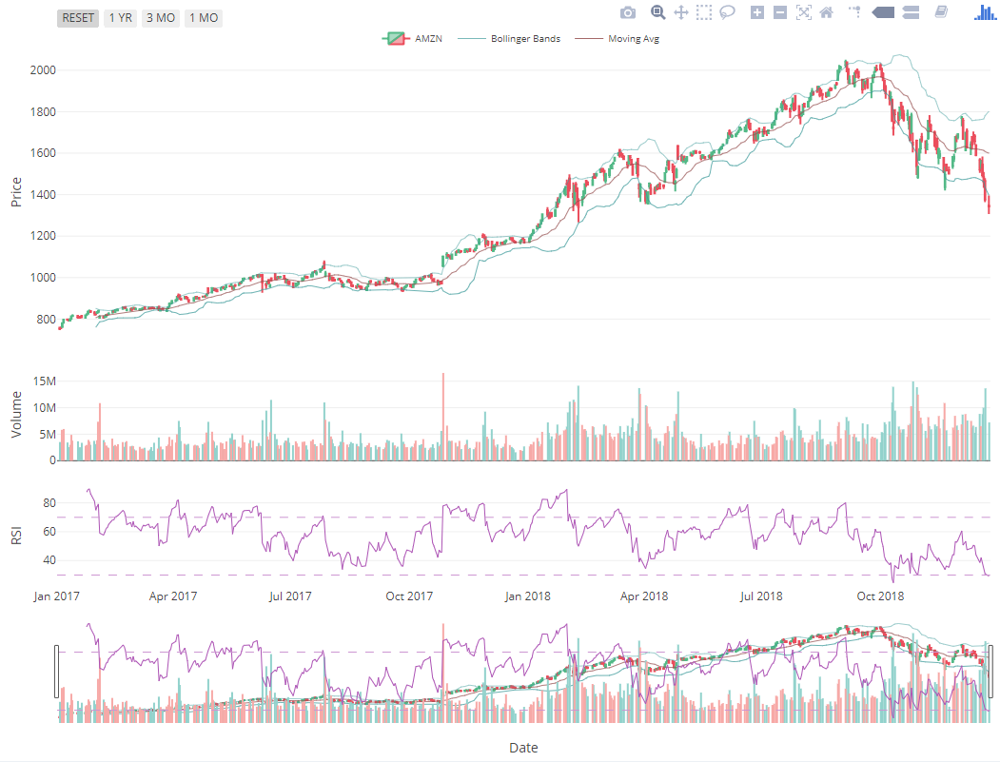

Stock Watch

by: Shahyar Taheri
12/20/2018,
by: Shahyar Taheri
12/20/2018,
Stock watch provides a simple interface to query and view the historical data for NASDAQ stock exchange. The Quantmode library was used for getting data from yahoo website.
getSymbols("AMZN",src="yahoo",auto.assign=F)[1:2,1:4]
## AMZN.Open AMZN.High AMZN.Low AMZN.Close
## 2007-01-03 38.68 39.06 38.05 38.7
## 2007-01-04 38.59 39.14 38.26 38.9
Navigate to the dashboard tab, choose the symbol and the date range for querying the data. The time span can be narrowed down using the range selector on the bottom of the plot or using the date selector buttons. A table of processed data can be viewed in the raw data tab.

The following indicators are included calculated in the server and displayed on the dashboard: